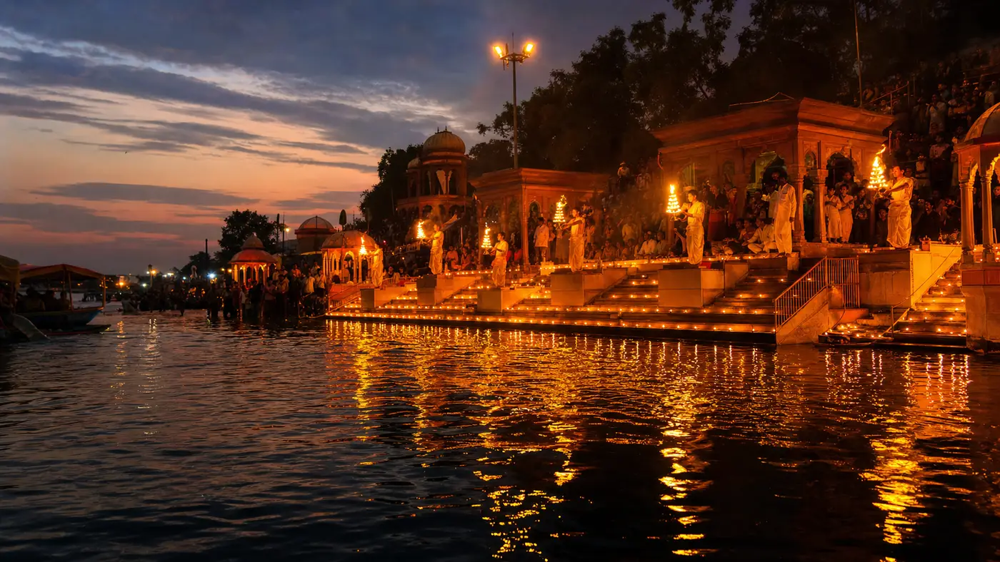
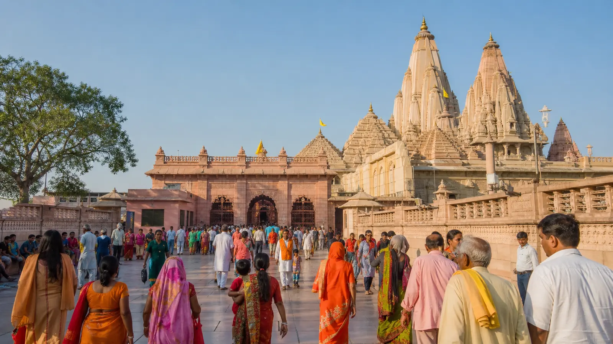
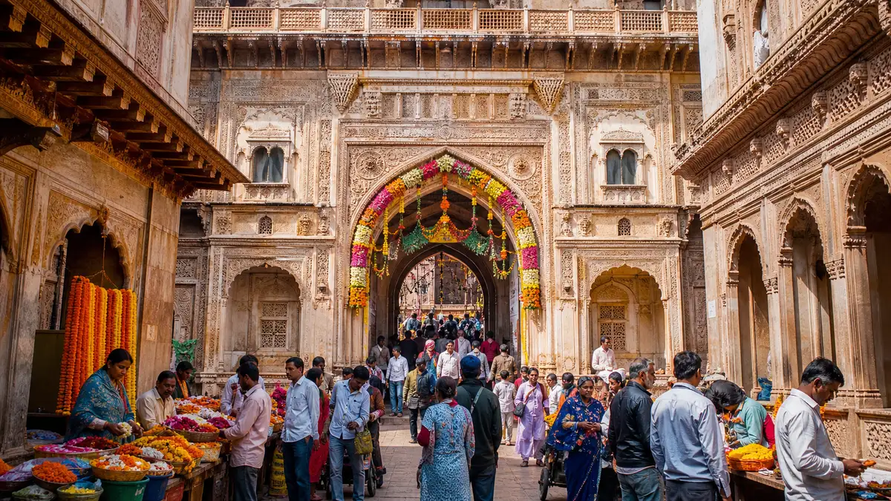

Stop 1 · 6–7 AM
Stop 1 · 6–7 AMPickup In Agra
Your driver comes to your hotel, home, Agra Cantt or Kheria Airport. An early start is what makes the whole day work — you reach Mathura before it gets hot and before the queues build.
About 1.5 hrs to Mathura200–250 KM Round Trip
8–10 Hours · Driver Waits Throughout

Mathura and Vrindavan are only 15 km apart, but doing both in a day means a lot of stopping, parking and waiting — shoes off at every entrance, phones and bags left behind, and darshan queues that are impossible to predict. This tour keeps the same cab and driver from your Agra pickup to your return, so the timing bends around the temples instead of the other way round.
200–250 KM
Agra › Mathura › Vrindavan › Agra
8–10 HRS
Full Day, 4–5 Hrs Of It Driving
₹3,000
Full Day, AC Sedan
6–7 AM
Recommended Pickup Time
This is the running order most customers use. It is not fixed — tell your driver in the morning if you want to swap something, drop a stop or spend longer somewhere.
Stop 1 · 6–7 AMYour driver comes to your hotel, home, Agra Cantt or Kheria Airport. An early start is what makes the whole day work — you reach Mathura before it gets hot and before the queues build.
About 1.5 hrs to Mathura
Stop 2 · MorningThe birthplace of Lord Krishna, and the reason most people make this trip. The complex includes the main temple and the underground prison cell. Security is tight, so leave phones and bags in the car.
Allow 1–1.5 hours
Stop 3 · Late MorningDwarkadhish sits in the old town, a short walk from Vishram Ghat on the Yamuna — the ghat where, by tradition, Krishna rested after defeating Kansa. Both are usually done together on foot.
Allow 1–1.5 hours Stop 4 · Midday
Stop 4 · MiddayOnly 15 km, about 25 minutes. A good point to stop for lunch, and the natural break between the Mathura half of the day and the Vrindavan half.
25 minutes plus a meal stop Stop 5 · Afternoon
Stop 5 · AfternoonBanke Bihari in the old-town lanes, the ISKCON Krishna Balaram Mandir, and Nidhivan and Seva Kunj — the groves that close to everyone after sunset, so they have to be fitted in before dark.
Allow 2–3 hours Stop 6 · Evening
Stop 6 · EveningMost people finish here, because the light show is worth waiting for. From Vrindavan it is roughly two hours back to Agra, so a 6–7 pm return is normal.
Back in Agra 6–7 pmOne fare for the whole day, whichever package you pick. Fares are for the vehicle, not per person.
| Tour Package | AC Sedan | SUV (Ertiga) | SUV (Innova) |
|---|---|---|---|
| Mathura + Vrindavan (standard) | ₹3,000 | ₹3,800 | ₹4,500 |
| Mathura + Vrindavan + Barsana | ₹3,500 | ₹4,500 | ₹5,500 |
| Mathura + Vrindavan + Govardhan | ₹3,500 | ₹4,500 | ₹5,500 |
| All four — Mathura, Vrindavan, Barsana, Govardhan | ₹4,500 | ₹5,500 | ₹7,000 |
Fares cover fuel and driver charges for the full day. Tolls and temple parking are paid separately, at actuals. Festival-season fares may be slightly higher — you are told the fare in writing before you book, either way. See the full Agra taxi fare list for every other route.
Clear Fare Breakdown
The whole vehicle, the whole day, at a price agreed before you set off.
Spend as long as you want at each temple. Nothing on the day is timed against a bus or a group.
Phones, bags and shoes stay in the car. Several temples here will not let you bring them in at all.
Space for luggage and offerings, a cool car to rest in between stops, and no walking between transport points.
They know the parking, the one-way lanes and roughly when each temple closes between sessions — useful when a queue turns out longer than expected.
Picked up at your Agra hotel or station and dropped back at the same place, not at a stand somewhere.
No per-kilometre counting and no per-hour waiting charge. You agree the number before you leave.
Travel date, pickup time and point in Agra, passengers, cab type, and which package you want.
We confirm the all-day fare in writing, with tolls and parking identified separately. No advance is needed for most bookings.
Name, mobile number and car number before pickup — match the plate before you board.
Not everyone wants the full day. Both towns are also run on their own, and a single-town round trip costs less than the tour.
Krishna Janmabhoomi, Dwarkadhish and the ghats, without the Vrindavan half.
From ₹1,500 one wayStraight to Banke Bihari, Prem Mandir and ISKCON.
From ₹1,800 one wayThe combined round trip, described route-first rather than as a tour package.
₹3,000 round tripA worked itinerary for fitting both towns into a single day from Agra.
ItineraryTemples, timings, food and festivals for a first visit.
Travel GuideSix temples worth a day, and a sensible order to see them in.
Travel GuideLocal Agra Operator
Padma Shree Travels operates from Shamsabad, Agra, running local sightseeing, station and airport transfers, pilgrimage trips and outstation routes. Longer pilgrimage days are also run — Barsana, Govardhan and the wider temple routes from Agra.
Direct WhatsApp and phone support before and during your trip.
.jpg)
The full-day Mathura and Vrindavan tour costs ₹3,000 round trip in an AC sedan, ₹3,800 in an Ertiga and ₹4,500 in an Innova. That covers fuel, the driver and stops at the temples in both towns. Tolls and parking are paid separately.
In Mathura: Krishna Janmabhoomi, Dwarkadhish Temple and Vishram Ghat. In Vrindavan: Banke Bihari, Prem Mandir, the ISKCON Krishna Balaram Mandir, Nidhivan, Seva Kunj and the Yamuna ghats at Kesi Ghat. Radha Vallabh Temple and other stops can be added if you have time.
The round trip from Agra covering both towns is approximately 200 to 250 km. Plan on a full day of 8 to 10 hours, of which about 4 to 5 hours is actual driving. The rest is temple time.
We recommend a pickup between 6 and 7 am so you reach Mathura before the day gets hot and crowded. Most customers are back in Agra between 6 and 7 pm, depending on how long they spend at each temple.
Yes, if you start early. The extended tour including Barsana is ₹3,500 for an AC sedan, and you should plan on a 10 to 12 hour day rather than 8 to 10.
A private AC cab is the easier option for both. You can take a break whenever you need one, the car is somewhere cool to sit between temples, and your driver helps you find your way around crowded temple areas.
Yes, we run during festivals. Book 2 to 3 days in advance for Janmashtami, Holi and Radha Ashtami, as demand is very high. Festival-season fares may be slightly higher, and we will tell you the fare in writing before you book either way.
Many temples in Mathura and Vrindavan restrict phones and bags inside, and shoes come off at the entrance. Your driver can keep them safe in the car, which is one of the practical reasons a private cab makes this day easier. Comfortable shoes and modest dress are worth planning for, and in summer carry water.
The longer pilgrimage day, adding the Radha Rani temple at Barsana.
₹3,500 full dayGovardhan Parikrama, Radha Kund and Kusum Sarovar.
Fare on WhatsAppEvery pilgrimage route we run, in one place.
View pilgrimage routesTaj Mahal, Agra Fort and Akbar’s Tomb — a full day in the city.
From ₹2,500Akbar’s abandoned capital, a UNESCO World Heritage Site.
From ₹2,500Every route and package we run, with fares in one place.
All faresAll-day fare in writing. Driver waits at every temple.
Send your travel date, pickup point and which package you want — we confirm the fare and the plan before you leave Agra.